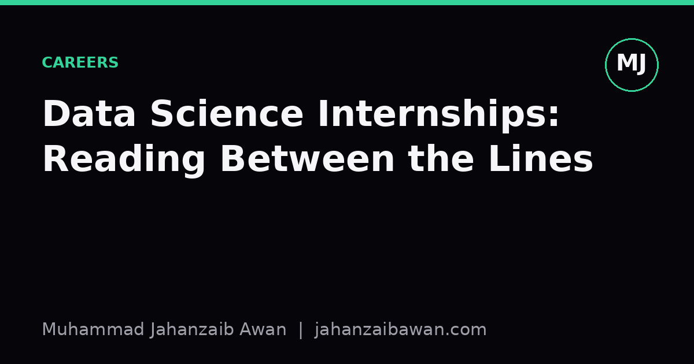

Data Science Internships: Reading Between the Lines
A good internship teaches you to think like a data scientist, not just use their tools. Here is what to look for before you apply.

Why the wording matters more than the title
Every internship posting with the words 'data science' in the title looks roughly the same from a distance: Python, SQL, a bit of machine learning, 'passion for data'. But two internships with near-identical titles can lead to completely different six months. One has you cleaning spreadsheets and building dashboards nobody reads. The other has you sitting in on model reviews, defending a validation split to a sceptical senior scientist, and learning why your first model's apparent 92 percent accuracy fell apart the moment it met new data. The difference rarely shows up in the job title. It shows up in the small details of the description, if you know what to read for.
I say this as someone who spends a lot of time thinking about how models are evaluated and why so many of them quietly fail in deployment. That failure usually traces back to habits formed early: the first internship, the first small project where nobody checked whether the test set had leaked into training, where 'it worked' was accepted without asking what 'worked' actually measured. A good internship catches those habits before they calcify. A bad one reinforces them by rewarding whatever number goes up, regardless of whether it means anything.
So the real question when scanning a job description is not 'does this mention machine learning', but 'will this environment teach me to be rigorous, or will it teach me to be fast and wrong'. That distinction is visible if you look past the buzzword list and focus on structure, specificity, and what the company is honest enough to admit it does not yet know.
Signals worth chasing
The first thing I look for is specificity about the actual problem. A posting that says 'you will work on churn prediction using customer transaction data and will present findings to the retention team' tells you far more than 'you will apply machine learning to business problems'. Specificity suggests the role already exists in someone's head with a defined shape, rather than being invented to justify a headcount. It also suggests you will inherit a real dataset with real messiness rather than a toy problem assembled for appearances.
Second, look for mentorship that is described concretely rather than promised vaguely. 'You will be paired with a senior data scientist for weekly one-to-ones and code review' is a real structure. 'Opportunity to learn from a talented team' is marketing copy. The difference matters enormously in practice. Imagine two interns building the same binary classifier on an imbalanced dataset, say 5 percent positive class. The one with weekly code review gets asked, in week two, why their F1 score of 0.81 means almost nothing without a baseline comparison against simply predicting the majority class, which might already achieve 95 percent accuracy. The one without that mentor ships the model, presents the 95 percent-sounding number, and only learns the lesson when someone in production notices the model never fires at all.
Third, watch for how the posting talks about evaluation and iteration. Phrases like 'you will help define success metrics before model development begins' or 'experience with cross-validation and holdout testing a plus' suggest a team that treats measurement as a first-class concern rather than an afterthought. Compare that to postings obsessed with tools: 'experience with the latest LLM frameworks' with no mention of how outputs get checked. Tool fluency is teachable in weeks. Evaluation discipline is a habit of mind that takes much longer to build, and it is the thing an internship should be giving you time and space to practise.
Fourth, consider what happens to your work. 'Your model will inform our quarterly inventory forecast' is different from 'you will build a proof of concept'. Neither is automatically bad. A proof of concept with a clear review process can teach you a great deal; a production-facing project with no safety net can be stressful and poorly supervised. What you want is evidence that someone senior will look closely at what you produce and tell you, honestly, where it is wrong.
Warning signs and the questions to ask at interview
Some phrases are worth treating as mild red flags, not disqualifiers, but prompts to dig further. 'Fast-paced environment' paired with 'self-starter' and no mention of mentorship often means you will be handed a dataset and left to work it out alone, which is fine for someone with six months of prior experience and less fine for someone's first real project. 'Exposure to the full data science lifecycle' sounds appealing but can mean you will touch everything shallowly and nothing deeply, which limits how much you actually learn about any single stage, including the evaluation stage that tends to get skipped first when time runs short.
A more subtle warning sign is a posting that lists an impressive stack, say a dozen tools and frameworks, but says nothing about the problem domain or the data itself. That imbalance suggests the team is hiring for tool familiarity rather than for problem-solving, which tends to produce internships heavy on scripting and light on thinking about whether the scripts answer the right question.
Once you reach interview stage, a handful of direct questions will tell you more than the job description ever could. Ask how the team validates a model before it is trusted, and listen for a real answer involving a held-out test set or time-based split rather than a vague 'we check the accuracy'. Ask what happens when a model underperforms after deployment; a team that has a concrete answer has clearly been burned before and learned from it. Ask whether past interns have had their work used, even in a small way, and what feedback process existed. The answers reveal far more about your likely six months than the glossy paragraph at the top of the job posting.
None of this guarantees a good experience, because teams change and projects shift. But reading a job description as a set of signals rather than a sales pitch shifts the odds in your favour. The best internships are not the ones with the shiniest tool list. They are the ones where someone has clearly thought about what you will learn, how your work will be checked, and what it means for a model to actually be good, rather than merely look good on a slide.